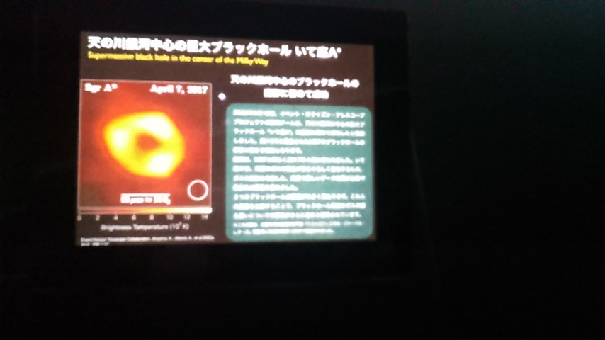

名古屋市科学館見学
宇宙の循環物質についてのお話でした。
宇宙では核融合反応, 超新星爆発など様々な爆発があり、それが私たちの見る夜空の光になっています。
様々な爆発を経て、密度の高い物質ができることが大きな特徴です
(1) 物は目に見えない小さな粒の集まりでできている(原子)
私たちが目にする物のどれもが「原子」と呼ばれる小さな粒でできています(大きさは 30 pm)。
またその粒の個数は 6 × 10の23乗個もあります。
食塩:58.5g
水:18g
鉄:55.9g
チョークの粉:100g
水素:1g
窒素:14g
酸素:16g
(2) 原子核, 電子
目に見えない小さな粒「原子」はさらにプラスの電気を帯びた原子核とマイナスの電気を帯びた電子に分かれます。
夜空に見える光はこの原子核の中身が変化した時に出る光です。
(3) 超新星爆発
原子核と電子が押し潰されて中性子だけの星ができます。
(4) ブラックホール
さらに押し潰されると非常に強い重力源だけが残ります。

夜空の星